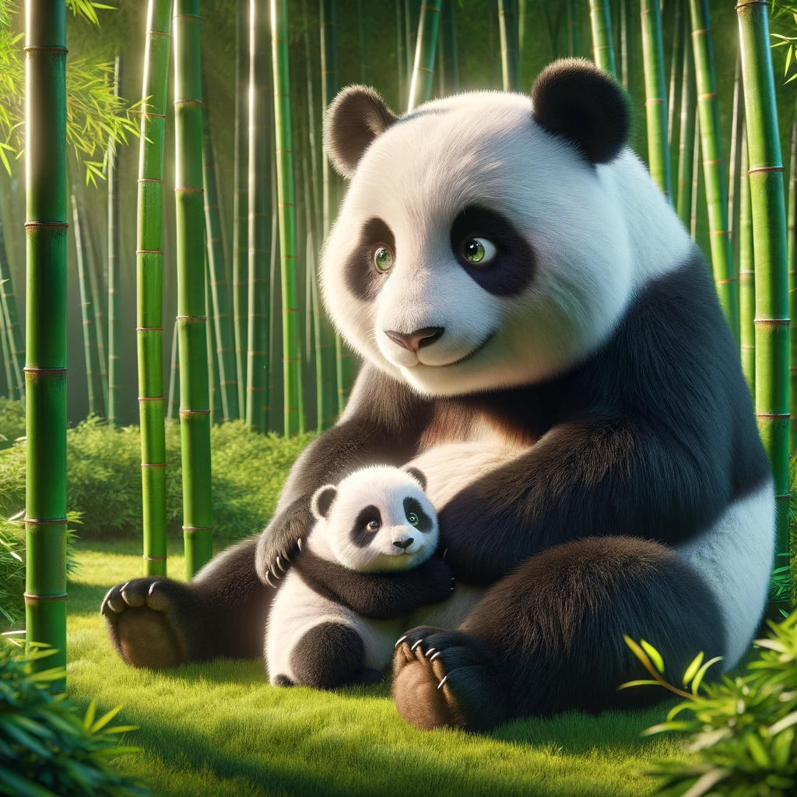

小熊貓降臨!這個迷人的小動物以其可愛的外表和活潑的個性而聞名。
它們被認為是竹林中的守護神，因為它們主要以竹子為食。
發佈日期:2023-11-17
更新日期:2023-11-17
(• ω• )觀看次數:5789
親愛的朋友們!
我們有一個令人振奮的消息要與你們分享！大熊貓已經成功產下了一隻可愛的熊貓寶寶！這是一個令人雀躍不已的時刻，我們的心
情簡直難以言喻！這個小生命的誕生代表著生態保護工作的成功，也是大自然的神奇恩賜。大熊貓是一個瀕危物種，
力保護它們的生存環境，並且致力於繁殖計畫，以確保這個可愛的物種不會從地球上消失。
寶寶熊貓的誕生對我們來說意義非凡，它代表著我們不斷努力的成果，也是我們對未來的承諾。我們將繼續致力於保護大熊貓及其
棲息地，以確保這個世界上最迷人的生物能夠繼續存在並繁衍生息。
接下來，我們將提供最好的護理給這隻新生命，確保它健康茁壯地成長。我們的團隊將密切監察寶寶的健康狀況，並提供所需的營
養和照顧，以確保它能夠茁壯成長，成為下一代的大熊貓大使。
請加入我們的喜悅，分享這個美好的時刻！這是我們共同保護地球上珍貴生物多樣性的一部分，也是我們對未來充滿希望的象徵。
讓我們一起為這個可愛的熊貓寶寶的未來鼓掌喝采，並繼續努力，讓大自然的奇蹟繼續綻放！
謝謝你們的支持和關注，讓我們一起為更多的成功故事努力奮鬥，為我們的星球保護工作做出貢獻！一起前進，保護大熊貓，守護
地球！ 最誠摯的問候!
動物園上
我們有一個令人振奮的消息要與你們分享！大熊貓已經成功產下了一隻可愛的熊貓寶寶！這是一個令人雀躍不已的時刻，我們的心
情簡直難以言喻！這個小生命的誕生代表著生態保護工作的成功，也是大自然的神奇恩賜。大熊貓是一個瀕危物種，
力保護它們的生存環境，並且致力於繁殖計畫，以確保這個可愛的物種不會從地球上消失。
寶寶熊貓的誕生對我們來說意義非凡，它代表著我們不斷努力的成果，也是我們對未來的承諾。我們將繼續致力於保護大熊貓及其
棲息地，以確保這個世界上最迷人的生物能夠繼續存在並繁衍生息。
接下來，我們將提供最好的護理給這隻新生命，確保它健康茁壯地成長。我們的團隊將密切監察寶寶的健康狀況，並提供所需的營
養和照顧，以確保它能夠茁壯成長，成為下一代的大熊貓大使。
請加入我們的喜悅，分享這個美好的時刻！這是我們共同保護地球上珍貴生物多樣性的一部分，也是我們對未來充滿希望的象徵。
讓我們一起為這個可愛的熊貓寶寶的未來鼓掌喝采，並繼續努力，讓大自然的奇蹟繼續綻放！
謝謝你們的支持和關注，讓我們一起為更多的成功故事努力奮鬥，為我們的星球保護工作做出貢獻！一起前進，保護大熊貓，守護
地球！ 最誠摯的問候!
動物園上


動物園(Zoo)
地址：116台北市文山區新光路二段30號
電話：0229382300
更新日期 2023-11-17
Copyright © 2023 Zoo Inc. All rights reserved.